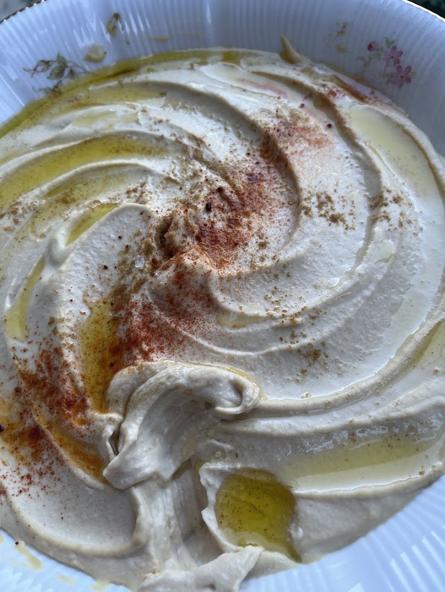
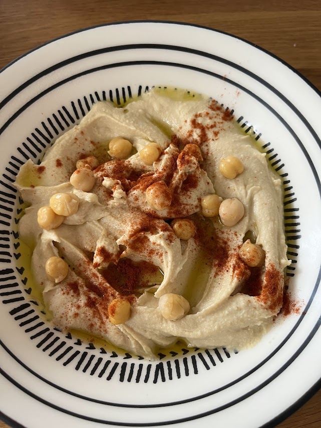

Houmous ultra crémeux
⏱️ 20 min
🔥 Très facile
👥 4 à 6 personnes



Étapes
- Blanchir les pois chiches pour enlever la peau : les frotter entre eux, la peau se détache facilement. Réserver quelques pois chiches pour la décoration.
- Mettre dans le bol du mixeur : les pois chiches épluchés, la purée de sésame, l’huile d’olive, l’ail, le jus de citron, les glaçons et le sel.
- Mixer longuement jusqu’à obtenir une texture très lisse et crémeuse. Goûter et ajuster l’assaisonnement (sel, citron) selon le goût.
- Verser le houmous dans un plat ou un bol. Juste avant de servir, creuser un sillon à l’aide d’une cuillère.
- Décorer avec les pois chiches réservés, le paprika, le zaatar (ou les herbes fraîches) et un filet d’huile d’olive.